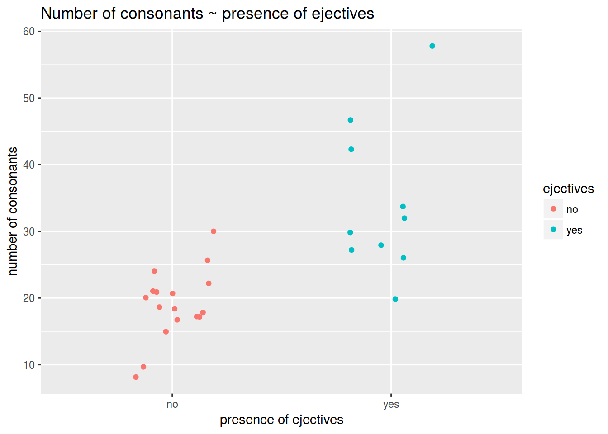
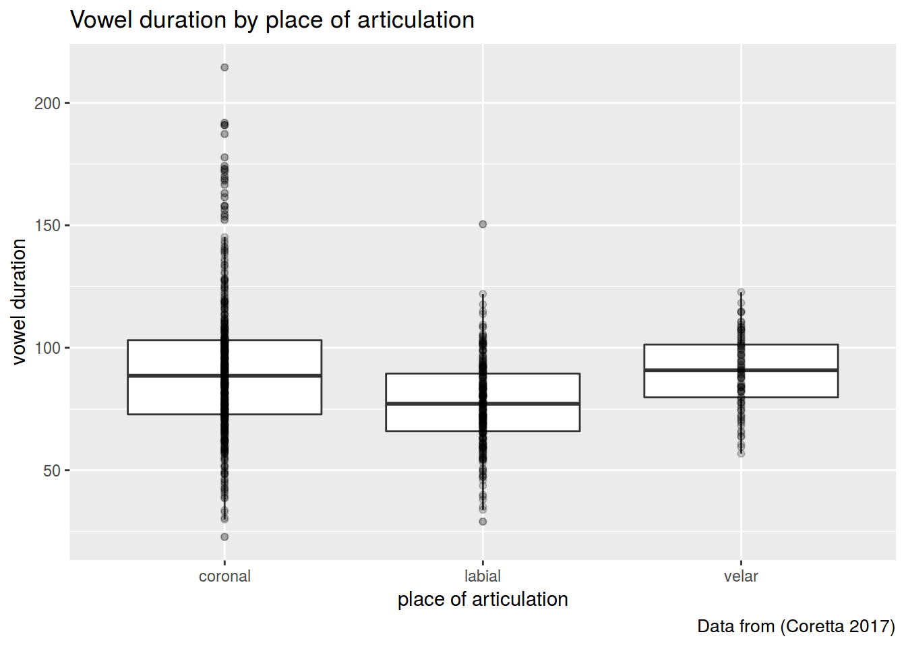
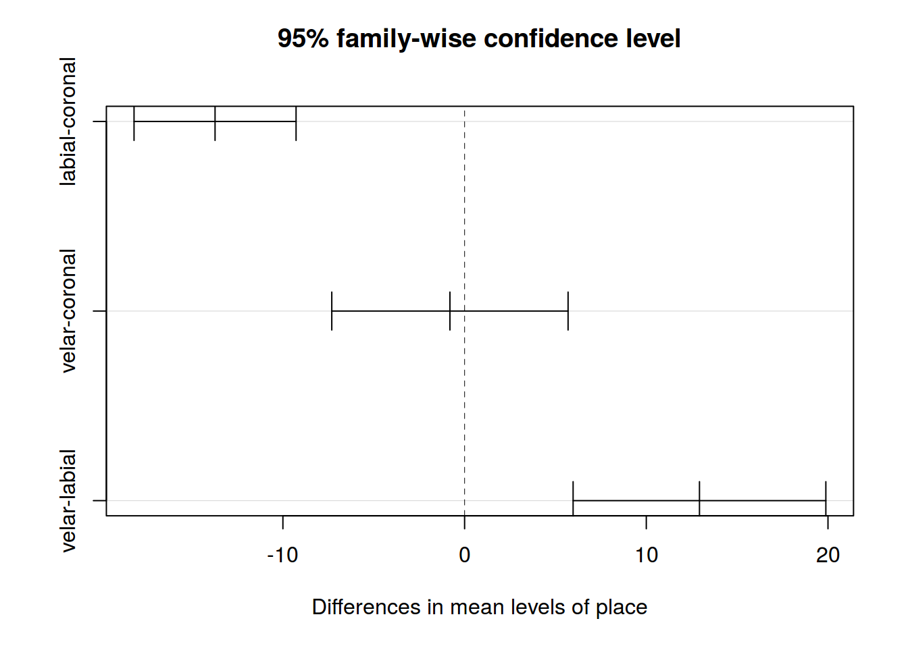
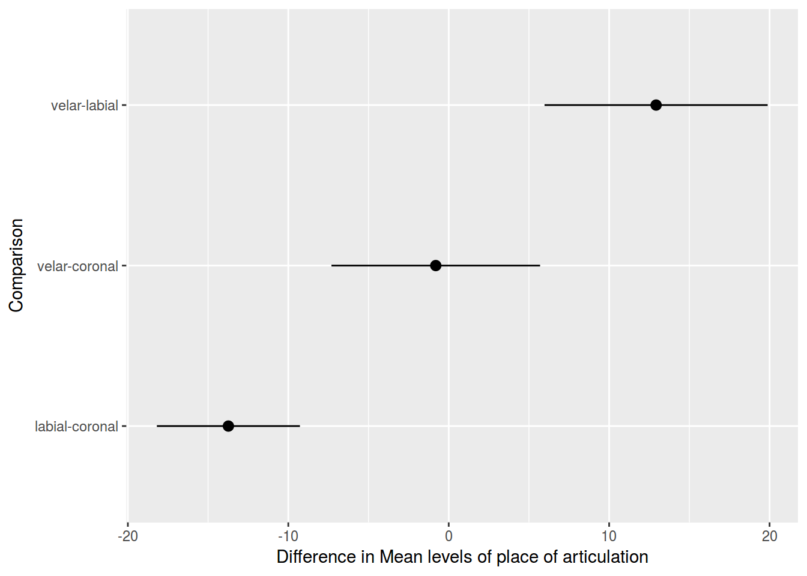

library(tidyverse)df <- read.csv("http://goo.gl/0btfKa")
df %>%
ggplot(aes(ejectives, n.cons.lapsyd, color = ejectives))+
geom_jitter(width = 0.2)+
labs(title = "Number of consonants ~ presence of ejectives",
x = "presence of ejectives",
y = "number of consonants")
df %>%
group_by(ejectives) %>%
summarise(mean(n.cons.lapsyd))## # A tibble: 2 × 2
## ejectives `mean(n.cons.lapsyd)`
## <fctr> <dbl>
## 1 no 19.05882
## 2 yes 34.40000fit <- lm(n.cons.lapsyd~ejectives, data = df)
summary(fit)##
## Call:
## lm(formula = n.cons.lapsyd ~ ejectives, data = df)
##
## Residuals:
## Min 1Q Median 3Q Max
## -14.400 -4.229 -1.059 2.441 23.600
##
## Coefficients:
## Estimate Std. Error t value Pr(>|t|)
## (Intercept) 19.059 1.953 9.758 5.25e-10 ***
## ejectivesyes 15.341 3.209 4.780 6.59e-05 ***
## ---
## Signif. codes: 0 '***' 0.001 '**' 0.01 '*' 0.05 '.' 0.1 ' ' 1
##
## Residual standard error: 8.053 on 25 degrees of freedom
## Multiple R-squared: 0.4775, Adjusted R-squared: 0.4566
## F-statistic: 22.85 on 1 and 25 DF, p-value: 6.588e-05fit$coefficients## (Intercept) ejectivesyes
## 19.05882 15.34118df <- read.csv("https://goo.gl/7gIjvK")
df %>%
ggplot(aes(place, vowel.dur))+
geom_boxplot(outlier.alpha = 0.2)+
geom_point(alpha = 0.2)+
labs(title = "Vowel duration by place of articulation",
caption = "Data from (Coretta 2017)",
x = "place of articulation",
y = "vowel duration")
fit <- aov(vowel.dur~place, data = df)
summary(fit)## Df Sum Sq Mean Sq F value Pr(>F)
## place 2 31819 15909 27.24 3.59e-12 ***
## Residuals 803 469031 584
## ---
## Signif. codes: 0 '***' 0.001 '**' 0.01 '*' 0.05 '.' 0.1 ' ' 1fit$coefficients## (Intercept) placelabial placevelar
## 91.0020703 -13.7344148 -0.8073382df %>%
group_by(place) %>%
summarise(mean(vowel.dur))## # A tibble: 3 × 2
## place `mean(vowel.dur)`
## <fctr> <dbl>
## 1 coronal 91.00207
## 2 labial 77.26766
## 3 velar 90.19473tk <- TukeyHSD(fit)
# fast visualization
plot(tk)
# ggplot
tk <- data.frame(tk$place)
tk$Comparison <- row.names(tk)
tk %>%
ggplot(aes(Comparison, y = diff, ymin = lwr, ymax = upr)) +
geom_pointrange() +
ylab("Difference in Mean levels of place of articulation") +
coord_flip()
m1 <- lm(cdi~tv.hours, data = tv)
summary(m1)
m2 <- lm(cdi~mot.education, data = tv)
summary(m2)
m3 <- lm(cdi~tv.hours+mot.education, data = tv)
summary(m3)
m4 <- lm(cdi~., data = tv[,-1])
summary(m4)tv %>%
ggplot(aes(tv.hours, cdi))+
geom_smooth(method="lm")+
geom_point()+
facet_wrap(~tv$book.reading)